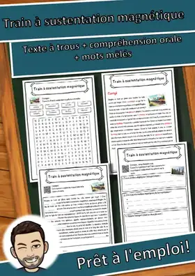
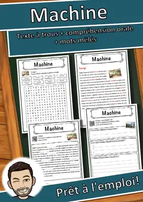
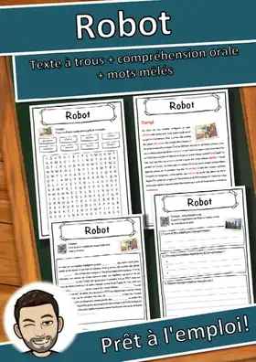
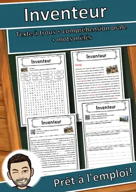
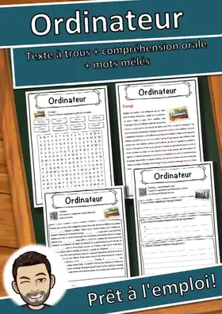
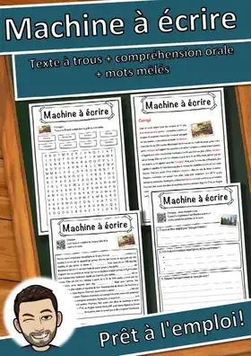
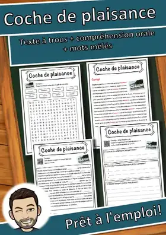
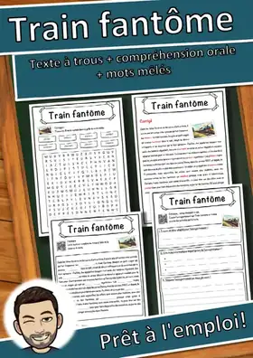
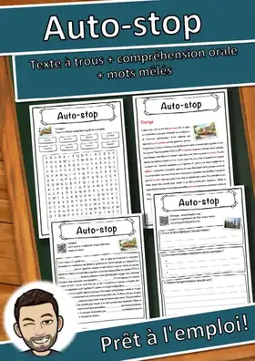

Technologie
11 fiches en français sur le thème « Technologie », prêtes à imprimer et avec corrigé.
11 ressources
Niveau
Auto-tamponneuse – Fiche : texte à trous, compréhension orale et mots mêlés

Train à sustentation magnétique – Fiche : texte à trous, compréhension orale et mots mêlés

Machine – Fiche : texte à trous, compréhension orale et mots mêlés

Robot – Fiche : texte à trous, compréhension orale et mots mêlés

Inventeur – Fiche : texte à trous, compréhension orale et mots mêlés

Ordinateur – Fiche : texte à trous, compréhension orale et mots mêlés

Machine à écrire – Fiche : texte à trous, compréhension orale et mots mêlés

Coche de plaisance – Fiche : texte à trous, compréhension orale et mots mêlés
Brevet d'invention – Fiche : texte à trous, compréhension orale et mots mêlés

Train fantôme – Fiche : texte à trous, compréhension orale et mots mêlés

Auto-stop – Fiche : texte à trous, compréhension orale et mots mêlés
Aucune ressource trouvée – essaie un autre mot ou un autre filtre.